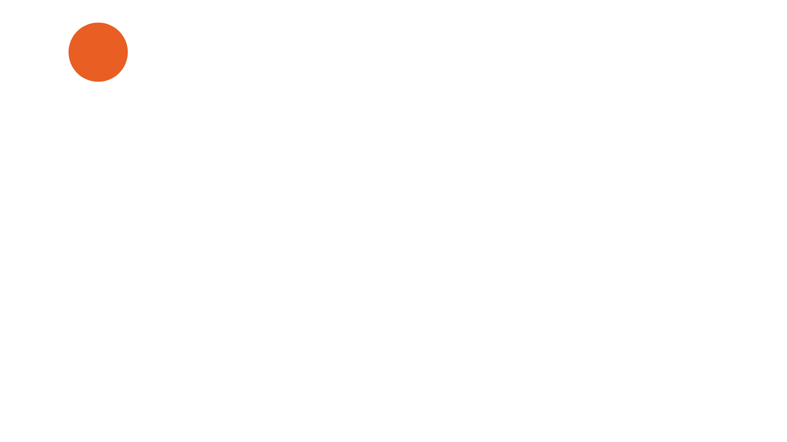
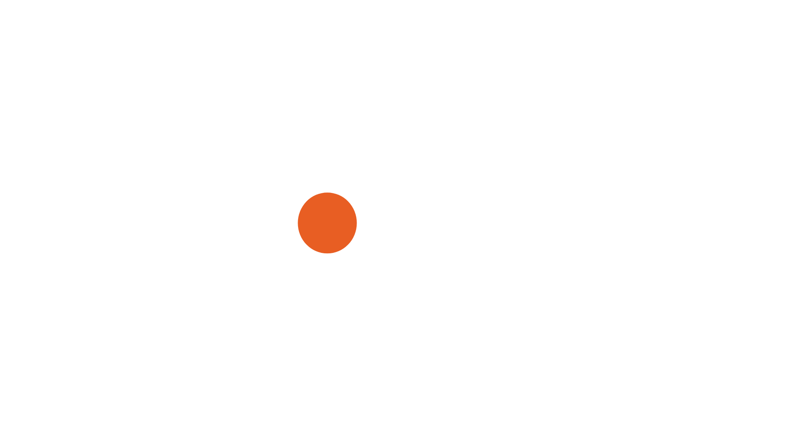
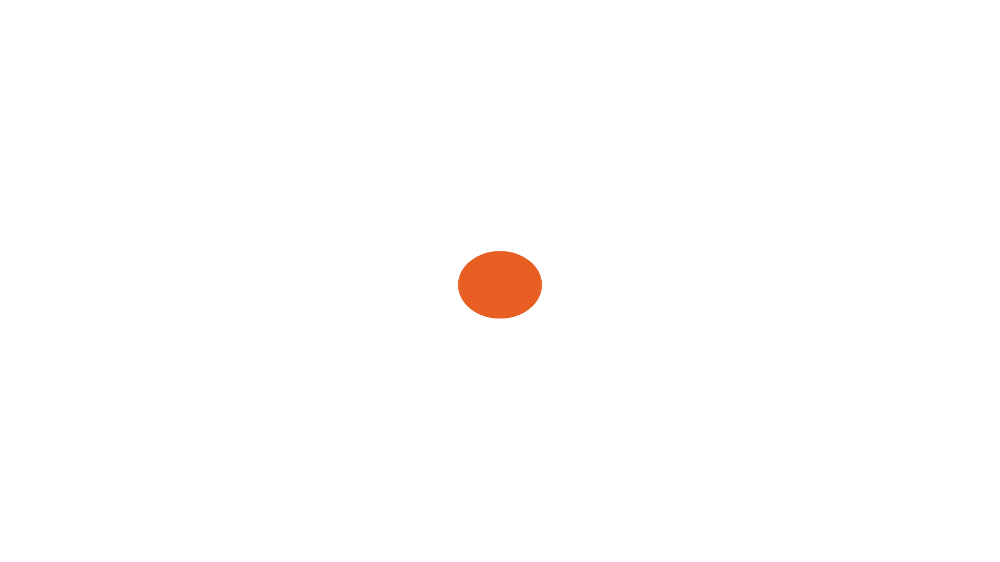
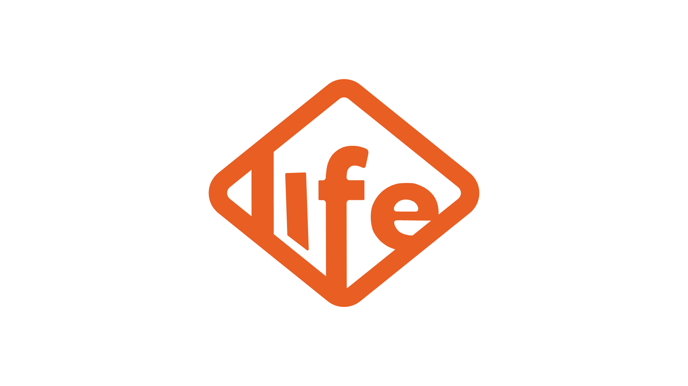
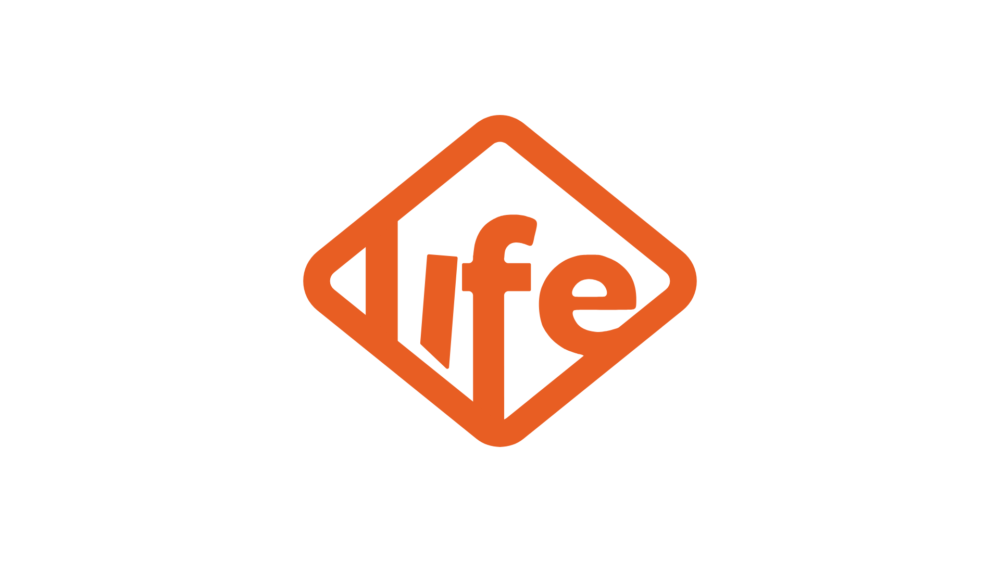
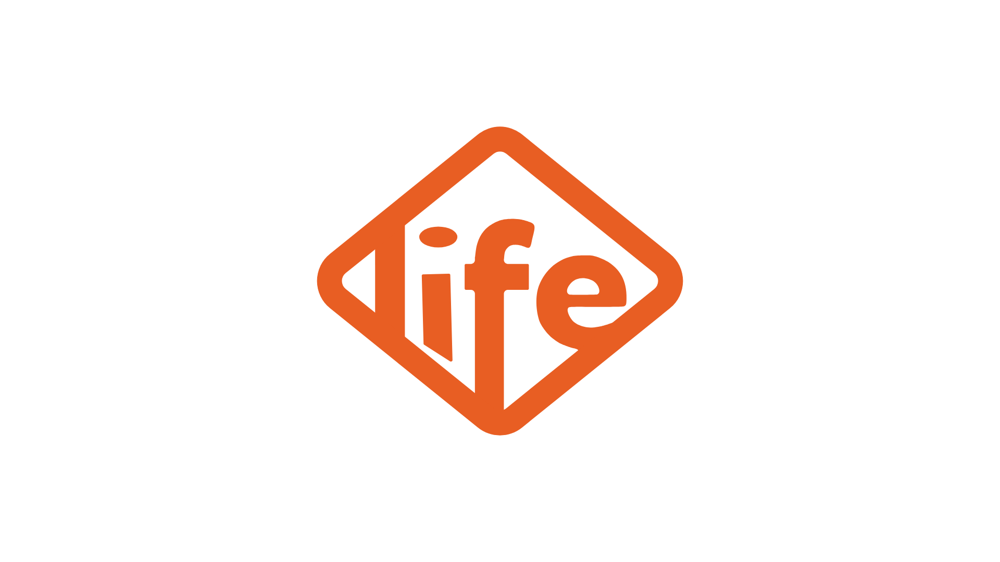
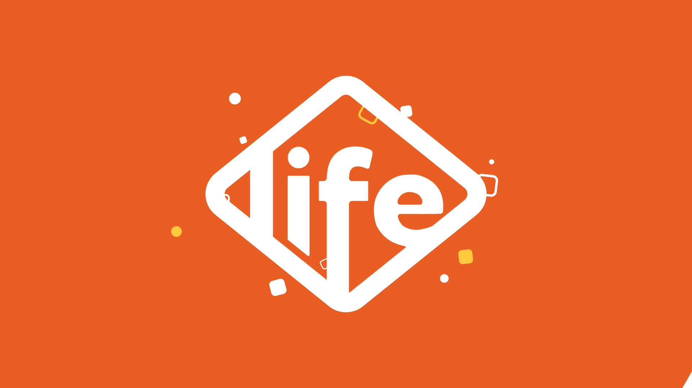
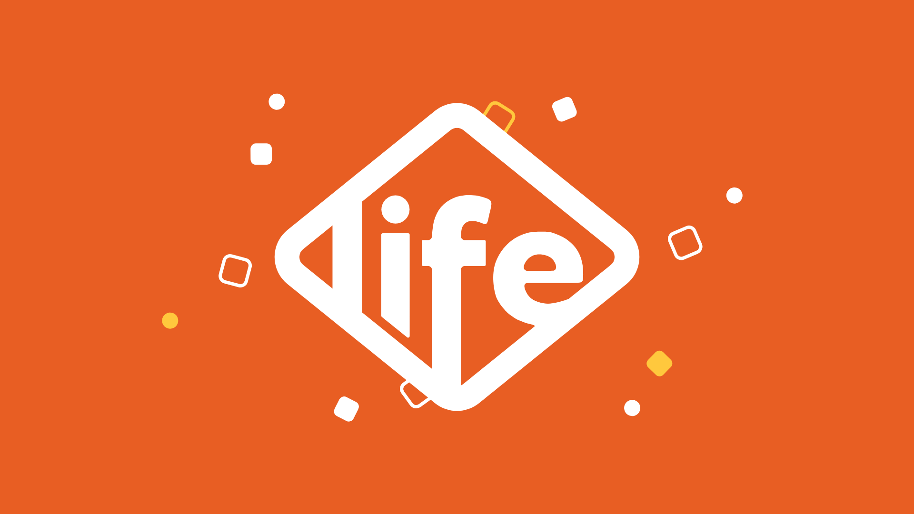
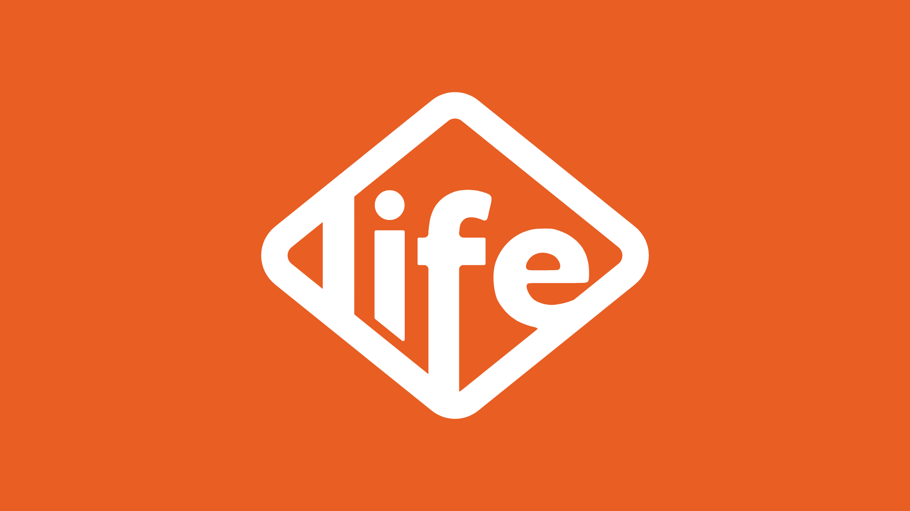

6 s · 120 BPM · a bolinha laranja carrega a história do começo ao fim: quica, vira o losango, as letras pulam, o pingo do i volta pro lugar e a cor explode a partir dele.
Logo redesenhada em vetor a partir do PNG (anel geométrico exato, letras com os contornos do original suavizados). Cores: laranja da logo #E85E23, branco e um amarelo sol #FFC83D só nos confetes.
Ato 1 · A bolinha

0.0 s
Já no quadro 1 a bolinha laranja está caindo do alto.
♪ assobio caindo
·
0.3 s
1º quique: amassa no chão e estica ao subir.
♪ boing (dó)
·

0.7 s
2º quique, mais baixo, chegando ao centro.
♪ boing (mi)
·

1.0 s
Pousa no centro e se agacha (antecipação).
♪ tambor abafado
Ato 2 · Vira a logo
1.3 s
POP: a bolinha infla e vira o losango da logo, com mola.
♪ pop + whoosh
·
1.6 s
O miolo se abre e nasce o anel.
♪ bloop
Ato 3 · As letras pulam
1.7 s
As letras saltam de dentro do losango, uma por vez.
♪ marimba subindo
·
1.9 s
Cada letra estica ao subir e balança ao pousar.
♪ dó-mi-sol-dó
·

2.4 s
O i olha pros lados: cadê o pingo?
♪ pausa engraçada
Ato 4 · O pingo volta

2.8 s
O pingo despenca do alto, esticado pela velocidade.
♪ assobio caindo
·

3.0 s
Plim! O pingo cai no lugar, o i e a logo cedem.
♪ plim + palmas
Ato 5 · Festa

3.2 s
O laranja inunda a tela a partir do pingo; a logo fica branca.
♪ acorde "tcharam"
·

3.5 s
Losangos e bolinhas da própria logo estouram em volta.
♪ chocalho
Final

5.5 s
Logo parada com zoom lento; o pingo dá um último pulinho (4,6 s).
♪ acorde soando
Mesma história; a logo fica maior e o quique ganha altura em vez de largura.
Ukulele e palmas a 120 BPM no fundo; cada ação tem seu efeito no quadro exato: boing em cada quique, pop quando vira o losango, marimba subindo nas letras, assobio caindo no pingo e um "tcharam" com palmas quando a cor explode. Master em -14 LUFS.